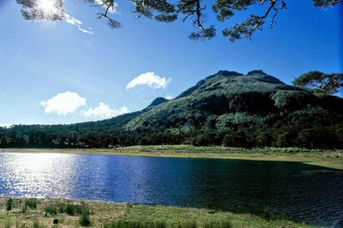
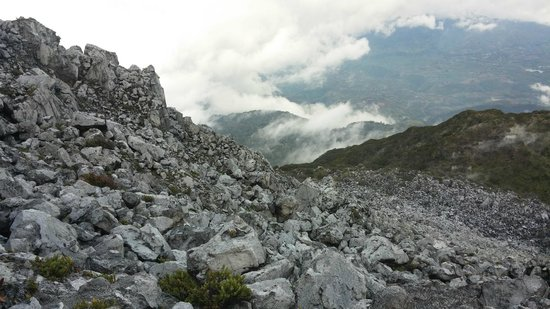
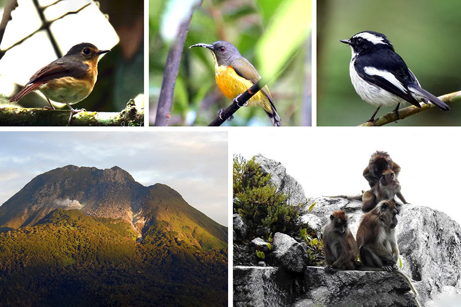

Conquer the grandest mountain in the Philippines, towering at 2,954 meters above sea level.
Trek through lush mossy forests and spot the majestic, critically endangered Philippine Eagle.
Experience the ancestral domain of the indigenous tribes who revere the mountain as a sacred deity.
Mount Apo Natural Park is not just a destination; it is a rite of passage for mountaineers and a sanctuary for nature lovers. Spanning across Davao del Sur and neighboring provinces, this dormant stratovolcano offers an unparalleled eco-adventure through highly diverse and breathtaking landscapes. Whether you choose the rugged Kapatagan trail or the scenic Sibulan route in Santa Cruz, the journey to the summit is an unforgettable physical and spiritual challenge. Trekkers navigate through shifting ecosystems—starting from lowland farming villages, moving up into ancient, misty mossy forests, and finally emerging into an otherworldly landscape of giant volcanic boulders and steaming sulfur vents before watching the sunrise above a sea of clouds.

An enchanting, mystical high-altitude lake located at the base of the summit, serving as the most popular campsite for climbers.

Navigate a surreal, moon-like landscape of giant, stark white volcanic rocks and active, steaming sulfur vents near the peak.

Keep an eye out for exotic orchids, wild pitcher plants, warty pigs, and the rich birdlife that call this protected park home.
Fly to Francisco Bangoy International Airport in Davao City, then take a bus south.
November to May is the dry season — ideal for outdoor activities and beach trips.
Davao del Sur offers affordable accommodations, food, and transport options.